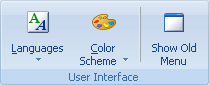
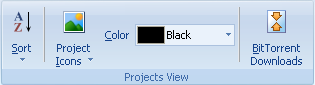

Utilice la pestaña Ver para habilitar o deshabilitar varias funciones de la Interfaz de Usuario de Portable Offline Browser y para ver o cambiar los parãmetros de configuración visibles del Proyecto.

Idiomas - Contiene una lista de los idiomas disponibles de la Interfaz de Usuario.
Combinación de colores - Cambiar el color de la Interfaz de Usuario.
Mostrar menú antiguo - Apaga la cinta de opciones y cambia al menú y barra de herramientas antiguos. Utilice el menú Ver - Mostrar Cinta de opciones para deshacer el cambio.

Progreso de descarga - Activa o desactiva el panel de progreso de descarga debajo del ãrbol de Proyectos.
Ventana de Acceso - Activa o desactiva el registro de mensajes de descarga.
Proyectos - Activa o desactiva el ãrbol de Proyectos.
Mapa - Activa o desactiva el mapa de sitios Web descargados.
Niveles - Activa o desactiva la pestaña que muestra todos los vínculos en pãginas Web descargadas.
Cola - Activa o desactiva el Administrador de Cola.
Navegador Interno. - Activa o desactiva el panel del navegador interno.

Ordenar - Ordenar Proyectos en la carpeta seleccionada por nombre, URL o tiempo de descarga.
Íconos de Proyecto - Cambia el ícono del Proyecto seleccionado.
Color - Cambia el color del Proyecto seleccionado en el ãrbol.
BitTorrent - Abre un diãlogo con todas sus descargas torrent para comenzar, borrar y ejecutar otras acciones.

Administrador de Programación - activa o desactiva el panel de Administrador de Programación.
Secuenciador - Activa o desactiva el secuenciador que permite descargar un Proyecto tras otro.